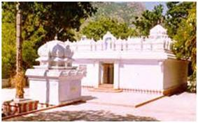

|
APPALAYANAGUNTA SRI PRASANNA VENKATESWARASWAMI TEMPLE  Sri Prasanna Venkateswaraswami Temple is located in Appalayanagunta, 14 km from Tirupati. It is believed that after Lord Sri Venkateswara married Sri Padmavathi Ammavaru, He blessed Sri Siddeswara and other sages here. The temple, constructed by the Rajas of Karvetinagar, consists of a shrine for Anjaneyaswami. The imposing image of the wind-god is worshipped by devotees for relief from chronic diseases. There are also idols of Goddess Padmavathi and Sri Andal here. The presiding deity in this temple, unlike in the main temple, is in the Abhaya Hastha pose. Brahmotsavam is celebrated once a year at this temple.
Festivals · Anivara Asthanam · Deepavali · Vaikunta Ekadasi and Vaikunta Dwadasi · Rathasapthami · Ugadi |